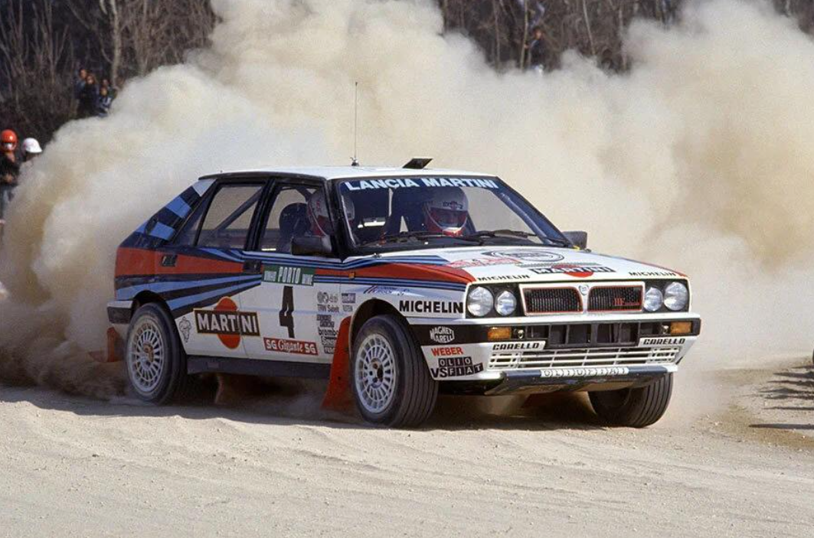
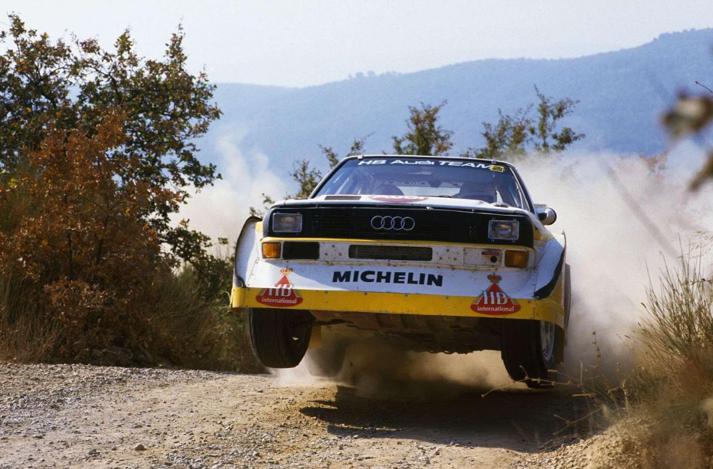
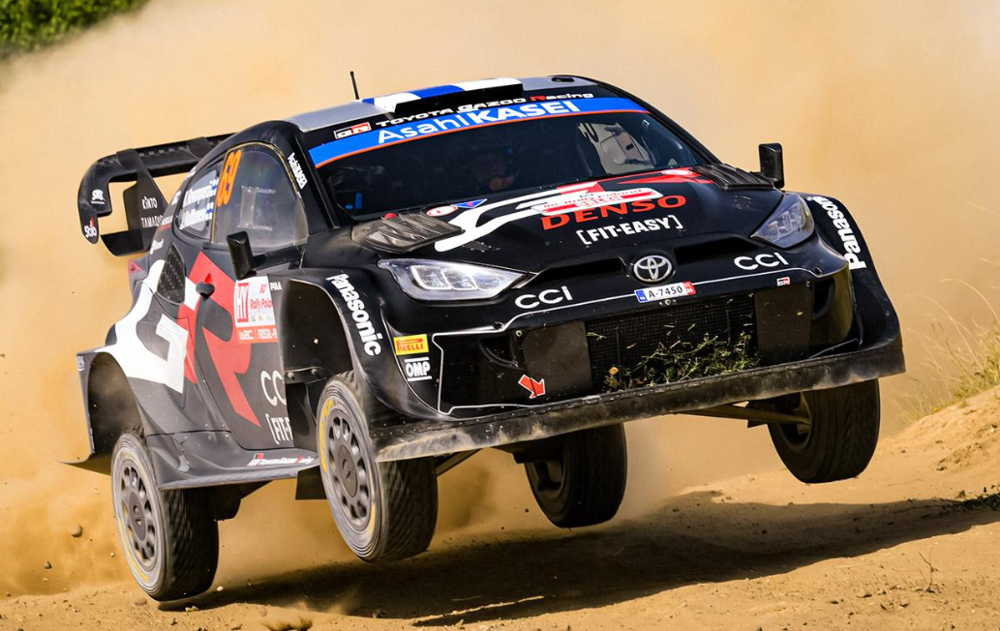

History of Rally Racing
Rally racing traces its roots to the dawn of the automotive era in the late 19th century. The 1894 Paris-Rouen trial in France—often recognized as the world's first competitive motoring event—challenged early horseless carriages to prove their reliability over a 126-kilometer route. Unlike circuit racing, which tests speed on closed tracks, early rallying pushed vehicles and drivers across real public roads, unpaved trails, and unpredictable weather to prove that automobiles were practical for long-distance travel.
The word "rally" itself entered motorsport history in January 1911 with the inaugural Monte Carlo Rally. Proposed by Alexandre Noghès and brought to life through the efforts of his son Antony, the event was organized by the Automobile Club of Monaco. Drivers started from 11 different European cities—including Paris, Geneva, and Berlin—and converged ("rallied") on Monte Carlo, judged not just on speed, but on average time, endurance, and even the comfort and condition of their cars upon arrival.

Early Development of Rally Racing
Following World War I and World War II, rallying evolved from endurance trials into a test of pure driving precision and speed. During the 1950s and 1960s, iconic events emerged across diverse terrains, such as the snowy forests of the 1000 Lakes Rally in Finland, the treacherous mountain passes of the Alpine Rally, and the grueling East African Safari Rally—which tested cars across thousands of kilometers of mud, dust, and wildlife in Kenya, Uganda, and Tanzania. Around this era, the modern rally format took shape: timed "special stages" on closed public roads linked by open-road transit sections where drivers had to obey local traffic laws.
In 1973, the Fédération Internationale de l'Automobile (FIA) unified the world's most prestigious events—including Monte Carlo, Sweden, Safari, and the RAC Rally in Britain—to establish the World Rally Championship (WRC). Initially awarding only a Manufacturers' Championship (won first by Alpine-Renault), the WRC introduced an official Drivers' Championship in 1979, cementing rallying as a premier global motorsport.
The 1980s brought one of the most dramatic chapters in racing history: the Group B era (1982-1986). Minimal regulations sparked a technological arms race, introducing all-wheel drive (pioneered by the Audi Quattro), turbocharging, and lightweight composite materials. Cars produced over 500 horsepower on narrow gravel and tarmac roads, drawing massive crowds. However, following a series of fatal accidents in 1986, the FIA banned Group B, ushering in stricter safety regulations and a new era of rally cars. Modern rallying continues to evolve through improvements in vehicle engineering, safety systems, and performance technology.

Rally Racing Today
Today, rally racing remains a thrilling motorsport that combines speed, skill, and endurance. The World Rally Championship continues to attract top drivers and manufacturers from around the globe, while regional and national competitions provide opportunities for emerging talent. Modern rally cars are equipped with advanced technology, including sophisticated suspension systems, turbocharged engines, and state-of-the-art safety features. Despite these advancements, the essence of rallying remains unchanged: drivers must navigate challenging terrain, adapt to unpredictable conditions, and work closely with their co-drivers to achieve victory.
The sport is structured around a global pyramid of FIA-sanctioned tiers and regional championships designed to develop talent from grassroots to the elite level:
Rally1 cars introduced hybrid technology in 2022, combining a turbocharged engine with an electric motor. However, the hybrid systems were removed in 2025, and the cars continued using sustainable fuel. A new generation of technical regulations is planned for the 2027 season.
- World Rally Championship (WRC): The pinnacle of the sport, featuring top-tier Rally1 machinery competing across five continents in iconic events from Monte Carlo to the Safari Rally in Kenya.
- WRC2, WRC3, and Junior WRC: Official support championships running alongside the WRC, utilizing cost-capped, production-based four-wheel-drive (Rally2) and two-wheel-drive (Rally3) cars to showcase rising stars.
- Regional & National Championships: Series such as the European Rally Championship (ERC), the African Rally Championship (ARC), and national competitions like the American Rally Association (ARA) bring high-level stage rallying to local fans and privateer teams worldwide.
How a Modern Rally Works
Unlike circuit racing, rally competitions take place across different roads and surfaces, including gravel, asphalt, snow, and mud. Drivers compete against the clock rather than racing directly against other cars on the same track.
Driver and Co-driver
Every rally team consists of a driver and a co-driver. The driver controls the car, while the co-driver reads pace notes that describe upcoming corners, road conditions, and hazards. Their communication and teamwork are essential for maintaining speed and avoiding mistakes.
Determining the Winner
Each competitor's stage times are added together to calculate their overall time. Penalties may be added for rule violations or delays. The competitor with the lowest total time after all stages wins the rally.

Key Milestones in Rally History
- 1894 - Paris-Rouen Trial:An early competitive motoring event that tested automobile reliability.
- 1911 - Monte Carlo Rally:The first edition of the famous international rally took place.
- 1953 - East African Safari Rally:A major endurance rally was established in East Africa.
- 1973 - World Rally Championship:The WRC was officially established.
- 1982-1986 - Group B Era:A remarkable period of powerful and technologically advanced rally cars.
- Today - Modern Rallying:Rally competitions continue to develop with improved technology and safety.